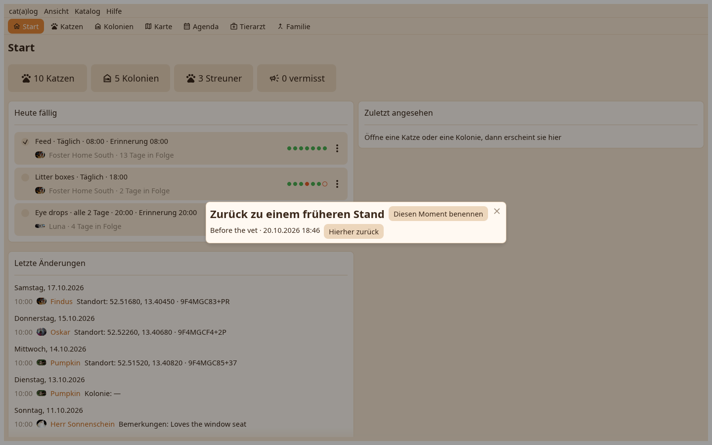

1. Die Momente
Jeder Moment mit seinem Anlass und dem Namen, den du ihm gabst. Zurückgehen schreibt alles danach in eine Datei in deinen Downloads, dann entfernt es.

Ein falscher Import wird rückgängig, indem du zum Moment davor zurückgehst.
Jeder Moment mit seinem Anlass und dem Namen, den du ihm gabst. Zurückgehen schreibt alles danach in eine Datei in deinen Downloads, dann entfernt es.
